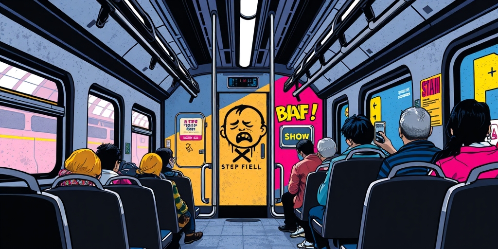
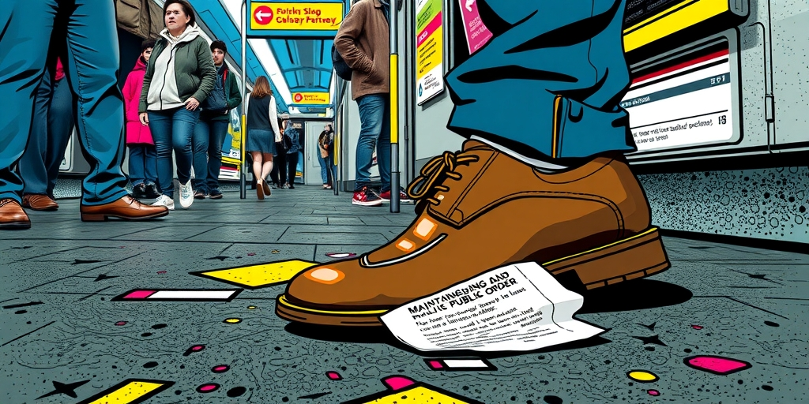
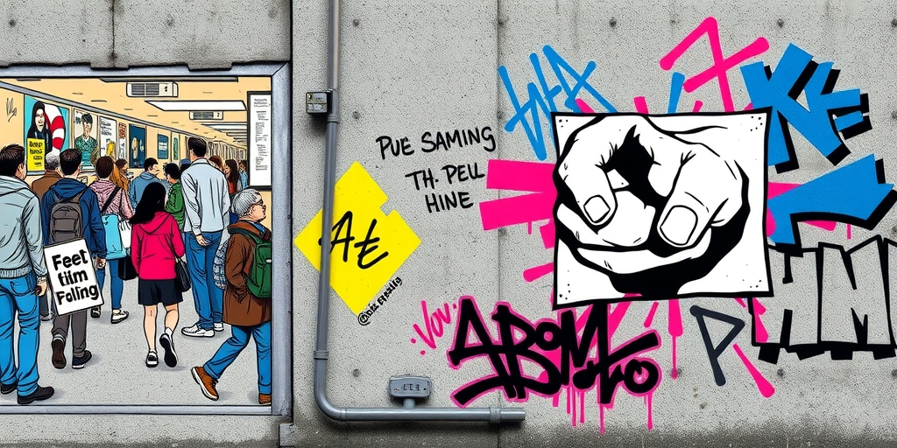
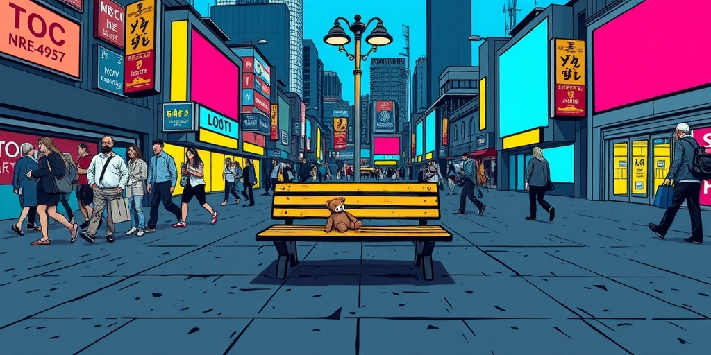

小汪老师的成长洞察 · 属于你的成长专栏
“请家长带哭闹儿童前往车厢连接处。”这条广播响起时，车厢里弥漫着一种心照不宣的默契。我们很少追问，这套“文明”规则是如何生长出来的。它始于体谅，却终成鞭子。

高铁上的广播，如今像一道隐形的线。它划分了车厢的“文明区”与“麻烦区”。婴儿的哭声，被系统性地归类为需要隔离的噪音。
你记得吗？几年前，舆论的靶子还是外放短视频的声音，是脱鞋踩座位的乘客。如今，一个无法自控的婴儿，反而成了更易被公开指点的对象。这种转变悄无声息，却无比牢固。

面对车厢里大声打电话的商务客，我们多会选择塞上耳机。对方体格健壮，语气强硬，冲突的潜在成本太高。我们的沉默，本质是风险计算后的妥协，与宽容无关。
但对着一位抱婴儿的母亲，情况就不同了。母亲内心有愧，婴儿毫无威胁。指责他们，安全、正确，还能收获周围乘客赞许的目光。这不是维护公德，这是在安全的环境里，练习一种廉价的勇气。正义感在这里，成了一种精准的情绪套利。
心理学中有个概念叫“替代性攻击”，人们会将受挫的愤怒，发泄到更弱小的对象身上。婴儿的哭声，恰好成了现代人在密闭空间里，释放无名焦躁的那个出口。我们发泄的，真的是对噪音的不满吗？

最初，有人在论坛分享：“我会主动带孩子去连接处哄。”这是一种可贵的体谅，是个人修养的体现。它获得了掌声，也开始被模仿。
掌声响多了，事情就变了质。体谅被冠以“高素养”的标签，继而被传播。很快，“自愿选择”被悄悄偷换成了“应尽义务”。没有这样做的家长，便被贴上“自私”、“没素质”的标签。美德一旦被命名并进入公共话语，就容易异化为审判他人的工具。
最有趣的一步，是广播的介入。机构力量为这套标准背书，完成了私德到公规的最后转化。劝说权从个别乘客，转移到了系统本身。制定规则的人，并非真正参与了那个“体谅”的瞬间，却收割了定义文明的权力。一条求助的哭声，就这样被训练成了公共失礼。

当我们追问“公共空间的秩序”时，往往忽略了另一个问题：这个秩序的叙事，是由谁构建的？答案通常是那些最善于表达、最掌握话语权的人。他们定义了何谓“文明”，何谓“打扰”。
无法为自己辩护的婴儿，精疲力竭、无力反驳的家长，在这套强大的叙事面前天然失语。他们的需求（婴儿的生理需求，家长的片刻安宁）被系统性地排除在“文明”的定义之外。公共空间的“公共性”在哪里？它是否只容纳那些懂得规则、遵守规则的“合格”成年人？
一个社会的文明底色，或许不在于它如何对待成功者，而在于它如何对待那些无法遵守复杂社会规则的最脆弱者。当孩子的哭声不再被默认为一种“需要处理的问题”，而是一种“需要理解的人类状态”，公共空间或许才真正接近文明。
写给你的话
下次在公共场合感到烦躁时，可以做个实验：观察一下自己愤怒的真正对象。是噪音本身，还是那个“破坏了我应有环境”的人？你的愤怒，有多少来自被侵犯的边界感，又有多少，是来自终于找到了一个“正确”的靶子？
道德优越感是一张很好用的入场券，能让你瞬间从旁观者变成审判者。但用得多了，你会发现自己只愿意在安全区里行使正义。真正的公共精神，或许始于对那些“不方便”的人，多一份不加评判的沉默。
参考资料
[1] Expert says these 5 toddler behaviours may feel frustrating to parents, but they are completely normal (Times of India) https://timesofindia.indiatimes.com/life-style/parenting/toddler-year-and-beyond/expert-says-these-5-toddler-behaviours-may-feel-frustrating-to-parents-but-they-are-completely-normal/photostory/131485091.cms
小汪老师的成长洞察 · 属于你的成长专栏